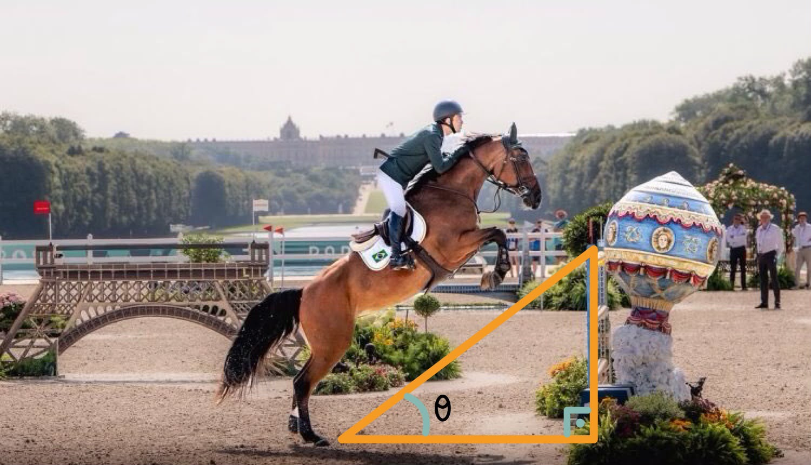
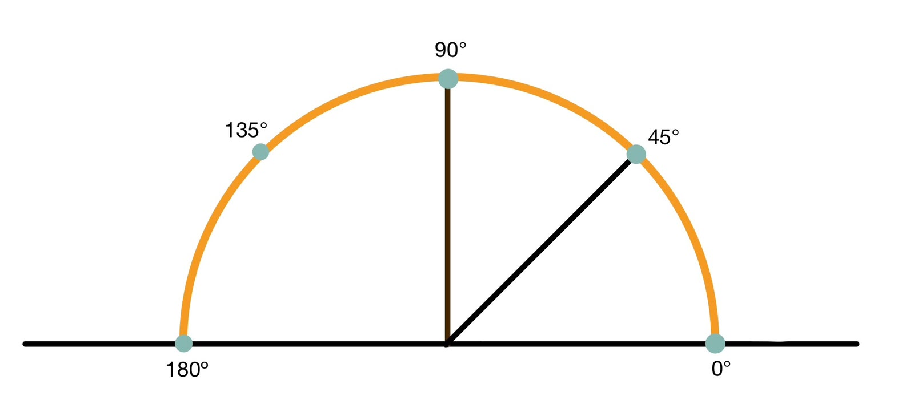
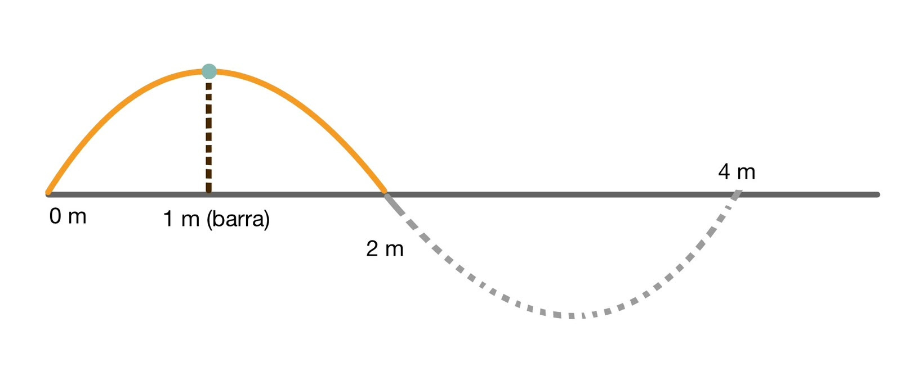

Em um salto de hipismo, o cavalo desenha um arco no ar. Nesse arco estão escondidos ângulos, radianos, círculos e ondas. Aqui vamos descobrir como a trigonometria explica o salto, a rotação da Terra e até o som de um relincho.
Ângulos, o triângulo de cada salto
Cada salto desenha um arco. Cada arco tem matemática.
Um ângulo mede a abertura entre duas linhas. Imagine uma linha no chão e outra subindo do ponto de decolagem até o topo da barra: elas formam um triângulo retângulo.
O vídeo mostra, em 3D, o arco que o cavalo faz no ar e o ponto ideal de decolagem. Quando ele decola longe demais, o arco fica achatado. Quando decola no ponto certo, o arco é equilibrado e sobra tempo para ajustar as passadas.
Salto de referência: salto de 1 metro
tan = co (altura) ca (distância)

| Decolagem | Conta | Ângulo | Arco |
|---|---|---|---|
| Longe(2m) | 1 ÷ 2 = 0,5 | ≈ 26,6° | baixo e achatado |
| Um pouco longe (1,5m) | 1 ÷ 1,5 ≈ 0,67 | ≈ 33,7° | mais baixo que o ideal |
| Ideal (1m) | 1 ÷ 1 = 1 | 45° | equilibrado |
| Perto(0,5m) | 1 ÷ 0,5 = 2 | ≈ 63,4° | quase vertical |
Por que acertar a distância é tão importante?
Quanto mais perto da barra o cavalo decola, maior o ângulo (63° em vez de 45°). Com a subida quase vertical, sobra pouco espaço para passar por cima, e por isso é mais provável fazer falta, como derrubar a barra. Decolar longe demais também não é bom, porque o arco fica baixo (27°). Chegar só 50 cm mais perto muda o ângulo em 18°, então a distância precisa ser a mais perfeita possível.
Poucos centímetros na distância mudam o ângulo, e o ângulo decide o salto.
Radianos, medindo o arco do salto
O arco do salto é uma curva, e o radiano é a forma de medir o quanto essa curva "gira". Graus e radianos são duas formas de medir ângulos. Uma volta completa vale 360° ou 2π rad
| Graus | 45° | 90° | 135° | 180° |
|---|---|---|---|---|
| Radianos | π 4 | π 2 | 3π 4 | π |
Para converter, multiplique os graus por π 180 Exemplo: 45° × π 180 = π 4
O salto como meia volta
No nosso salto de referência, o arco é meia volta de um círculo de 1 metro de raio, ou seja, π rad. O comprimento de um arco é o ângulo (em radianos) vezes o raio: S = θ × r
| Parte do salto | Ângulo | Em radianos | O cavalo percorre |
|---|---|---|---|
| Um pedaço do arco | 45° | π 4 | ≈0,79m |
| Da decolagem ao topo da barra | 90° | π 2; | ≈1,57m |
| Até a descida | 135° | 3π 4 | ≈2,36m |
| O salto inteiro | 180° | π | ≈3,14m |
Ou seja, o cavalo percorre cerca de 3,14m no ar para cobrir 2m no chão. Quanto maior o ângulo, maior o caminho percorrido.
Círculo Trigonométrico
O círculo trigonométrico tem raio 1. Lembra do nosso salto de referência? A decolagem fica a 1m antes da barra, a aterrissagem a 1m depois, e a barra tem 1m de altura. Esses três pontos ficam exatamente em cima de um círculo de raio 1, com o centro no chão, embaixo da barra> Então o arco do salto é a metade de cima do círculo trigonométrico Cada posição do cavalo no ar é um ângulo θ, e o ponto onde ele está tem coordenadas (cos θ, sen θ). O cosseno diz onde o cavalo está em relação à barra, e o seno diz a que altura ele está.

| Momento do salto | Ângulo | cos θ (posição) | sen θ (altura) |
|---|---|---|---|
| Decolagem | 180° | -1 | 0 |
| Subindo | 135° | -0,71 | 0,71 |
| Sobre a barra | 90° | 0 | 1 |
| Descendo | 45° | 0,71 | 0,71 |
| Aterrissagem | 0° | 1 | 0 |
Posição negativa quer dizer antes da barra, e positiva quer dizer depois dela. O seno nunca é negativo durante o salto, porque o cavalo está sempre no ar. Este é um modelo simples: o arco real do salto não é um círculo perfeito>
Quadrantes: em que parte do círculo o cavalo está?
O salto acontece só na metade de cima do círculo. Antes da barra o cavalo está no 2º quadrante (cosseno negativo). Depois da barra, está no 1º quadrante (cosseno positivo).
| 1º (0° a 90° | 2º (90° a 180° | 3º (180° a 270° | 4º (270° a 360° | |
|---|---|---|---|---|
| Seno | + | + | - | - |
| Cosseno | + | - | - | + |
Em um triângulo retângulo:
- sen θ = cateto oposto ÷ hipotenusa
- cos θ = cateto adjacente ÷ hipotenusa
- tan θ = cateto oposto ÷ cateto adjacente
No salto de 45°: a linha da decolagem até o topo da barra é a hipotenusa: √(1² + 1²) = √2 ≈ 1,41m
Funções trigonométricas, o salto como onda
O arco do salto lembra uma meia onda de seno> Com os nossos números, a altura do cavalo em cada ponto é: h(x) = sen (πx ÷ 2), com x em metros, de 0 a 2 Aqui x = 0 é a decolagem, x = 1 é a barra e x = 2 é a aterrissagem.

| Posição x | 0m | 0,5m | 1m | 1,5m | 2m |
|---|---|---|---|---|---|
| Altura h | 0 | 0,71m | 1m | 0,71m | 0 |
Amplitude (altura máxima): 1m. Período (uma onda completa): 2π ÷ ( π 2 ) = 4m. Se o cavalo saltasse obstáculos em sequência, a onda se repetiria. Isso é o que chamamos de função periódica.
Do muito grande ao muito pequeno
Dia a dia no hipisimo: O ângulo de 45° do salto, a distância de decolagem e o arco em forma de onda vêm da rotina de uma amazona/cavaleiro. Cada treino é uma aula de trigonometria. Dia a dia: a sombra da barra Quando o sol está a 45°, a sombra de um objeto tem o mesmo tamanho dele, porque tan 45° = 1. O salto de 1 metro projeta uma sombra de 1 m no chão> Rampas, escadas e telhados por exemplo usam a mesma conta do salto. A Terra A Terra dá uma volta completa (360°) em 24 horas: 360° ÷ 24 = 15° por hora, ou π/12 rad por hora. Perto do equador, isso é cerca de 1700Km por hora> estamos todos girando em um círculo, como o círculo do salto. Em um salto de cerca de 1 segundo, a Terra gira só uns 0,004°. O som e a luz O som é uma onda de seno. Um relincho agudo de 1000Hz repete a onda 1000 vezes por segundo, e cada onda dura 0,001s: em um salto de cerca de 1 segundo, são mil ondas. A luz também é uma onda, e cada uma mede menos de um milionésimo de metro. Tecnologia e engenharia A trigonometria calcula posições, distâncias e rotações na engenharia, na arquitetura, na programação e nos jogos de computador.
Do salto de 2m à Terra de milhares de Km, e ao som de 0,001s, a trigonometria é a mesma.
Teste seus conhecimentos
- Quanto vale 45° em radianos?
- π/2
- π
- π/4
- Salto de 1m e decolagem de 1m. Qual o ângulo?
- 30°
- 45°
- 60°
- O arco do salto de referência é meia volta de um círculo de raio 1m> Quanto o cavalo percorre no ar?
- π/2 ≈ 1,57m
- π ≈ 3,14
- 2π ≈ 6,28
- Com h(x) = sen (πx ÷ 2), qual a altura em x = 0,5m?
- 0,71m
- 0
- 1m
- Se o cavalo decola muito perto da barra o que é provável de acontecer?
- O ângulo diminui e o risco de falta diminui
- o ângulo aumenta e o risco de falta aumenta
- Nada muda
Respostas1-C, 2-B, 3-B, 4-A, 5-B
Neste salto de 1 metro vimos o ângulo de 45°, os radianos (π/4 e π) medindo o arco, o círculo trigonométrico mostrando a posição e a altura do cavalo no ar (cosseno e seno) e a função seno descrevendo a altura. A mesma matemática aparece na sombra da barra, na rotação da Terra e no som de um relincho. Vimos também que a distância certa de decolagem é fundamental: quanto mais perto da barra, maior o ângulo e maior a chance de falta. A trigonometria mostra, com números, por que o cavaleiro precisa acertar o ponto de decolagem. Um salto real também depende de velocidade, impulsão e do cavalo> Aqui usamos a trigonometria como um modelo simples para entender o arco.